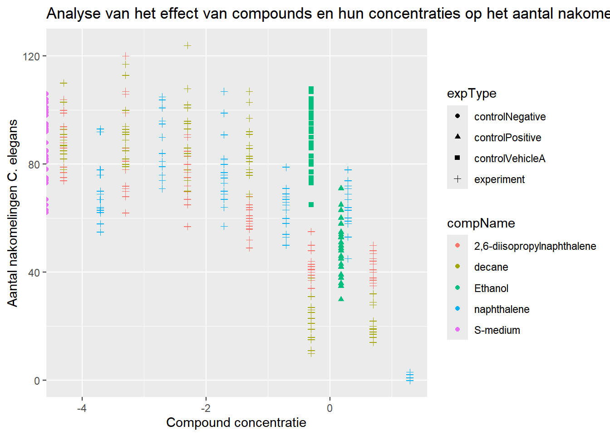
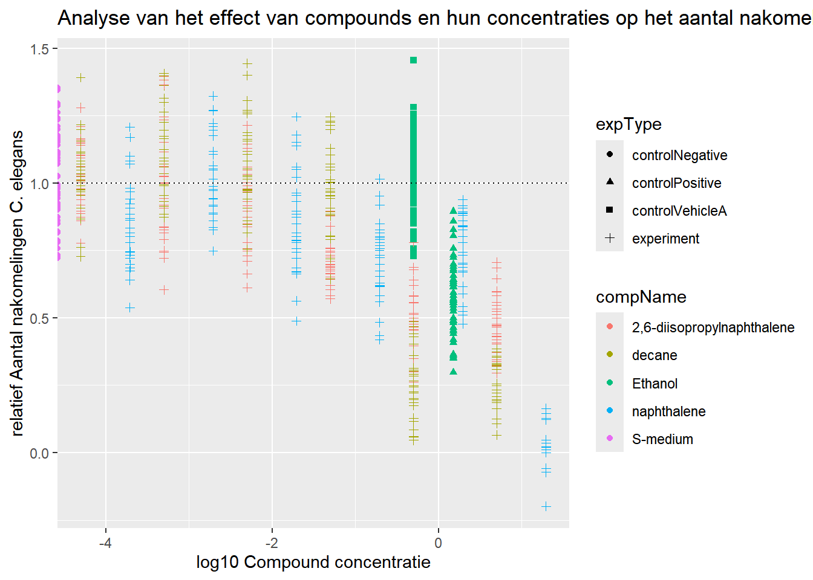

7 Reproduceerbaarheid
liq_data<-read_excel("../raw_data/CE.LIQ.FLOW.062_Tidydata(1).xlsx",sheet = 1)
liq_data$RawData %>% str() ## num [1:360] 44 37 45 47 41 35 41 36 40 38 ...## chr [1:360] "2,6-diisopropylnaphthalene" "2,6-diisopropylnaphthalene" "2,6-diisopropylnaphthalene" ...## chr [1:360] "4.99" "4.99" "4.99" "4.99" "4.99" "4.99" "4.99" "4.99" "4.99" "4.99" "4.99" "4.99" "4.99" "4.99" "4.99" ...## chr [1:360] "experiment" "experiment" "experiment" "experiment" "experiment" "experiment" "experiment" "experiment" ...## [1] "4.99" "0.499" "4.99E-2" "4.9899999999999996E-3"
## [5] "4.9899999999999999E-4" "4.99E-5" "19.5" "1.95"
## [9] "0.19500000000000001" "1.95E-2" "1.9499999999999999E-3" "1.95E-4"
## [13] "0,000195" "1.5" "0" "0.5"# Comma in een value
liq_data$compConcentration<-str_replace_all(liq_data$compConcentration,
pattern = ",",
replacement = ".")
liq_data$compConcentration<-liq_data$compConcentration %>% as.numeric()
liq_data$compConcentration %>% str() ## num [1:360] 4.99 4.99 4.99 4.99 4.99 4.99 4.99 4.99 4.99 4.99 ...liq_data %>% ggplot(aes(x = log10(compConcentration), y = RawData, colour = compName, shape = expType))+
geom_point()+
geom_jitter(height = 0.2)+
labs(title = "Analyse van het effect van compounds en hun concentraties op het aantal nakomeling van C. elegans",
x = "Compound concentratie", y = "Aantal nakomelingen C. elegans")## Warning: Removed 5 rows containing missing values or values outside the scale range (`geom_point()`).
## Removed 5 rows containing missing values or values outside the scale range (`geom_point()`).
normalised<- liq_data %>% filter(expType == "controlNegative")
liq_data <- liq_data %>% mutate("normdata" = RawData / mean(normalised$RawData))
liq_data %>% ggplot(aes(x = log10(compConcentration), y = normdata, colour = compName, shape = expType))+
geom_point()+
geom_jitter(height = 0.2)+
labs(title = "Analyse van het effect van compounds en hun concentraties op het aantal nakomeling van C. elegans",
x = "log10 Compound concentratie", y = "relatief Aantal nakomelingen C. elegans")+
geom_hline(linetype = "dotted",aes(yintercept = 1))## Warning: Removed 5 rows containing missing values or values outside the scale range (`geom_point()`).
## Removed 5 rows containing missing values or values outside the scale range (`geom_point()`).
In dit experiment worden verschillende compounds getest op C. elegans. Er wordt gemeten hoeveel nakomelingen de C. elegans heeft na blootstelling aan deze compounds. Hierbij is de negatieve controle S-medium en de positieve controle van het aantal nakomelingen is Ethanol.
De negatieve controle laat zien wat er gebeurt als de C. elegans bloot worden gesteld aan een stof die geen effect heeft op het aantal nakomelingen. De positieve controle is een stof waarvan bekend is dat het het aantal nakomelingen van C. elegans laat dalen. De vehicle control is de controle van ethanol wat overal in zit om de compounds op te lossen.
De normalisatie is gedaan met de negatieve controle, omdat deze je ‘0’ waarde is. Deze stof heeft geen effect op C. elegans en alles wat minder nakomelingen levert is waarschijnlijk giftig voor C. elegans, dus een negatieve waarde (<1). Alles erboven zorgt juist voor meer nakomelingen en kan mogelijk positieve effect hebben op de voortplanting van C. elegans, dus een positieve waarde (>1).
7.1 vervolgonderzoek
Een vervolgstap voor dit onderzoek zou zijn om een dose-reponse curve te gebruiken. Een package in R die dit doet is ‘drc’. Deze package bevat verschillende modellen en functies om dose-response curves te maken. Het algemene model is de “drc::drm” functie. Deze kan gebruikt worden voor een concentratie-reponse curve, zoals we hierboven hebben met C. elegans reponse op de concentratie van compounds.